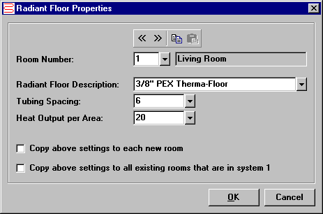

Radiant Floor Properties (Room Data Window) |
  
|
Radiant Floor Properties (Room Data Window) |
|
Click the dropdown help button beside the "Rad.F" input on the Room Data window to open the Radiant Floor Properties dialog, as shown below. These inputs are used to document the type of floor to be used and to calculate the required length of tubing for the room. The results are shown on the Radiant Floor report.

Go To Previous Room, Next Room: Goes to the previous or next existing room in the project. Note that you can set the radiant floor properties for any of the rooms in the project, not just the one that was current when you opened this dialog.
 Copy Radiant Floor Properties: Copies the radiant floor properties to a clipboard to be pasted into another room while this dialog is still open.
Copy Radiant Floor Properties: Copies the radiant floor properties to a clipboard to be pasted into another room while this dialog is still open.
 Paste Radiant Floor Properties: Pastes the radiant floor properties from a room that you previously copied since opening this dialog.
Paste Radiant Floor Properties: Pastes the radiant floor properties from a room that you previously copied since opening this dialog.
Room Number: Determines the room for which the properties will be set.
Radiant Floor Description: Specifies the text that will be used on the reports to help you document the type of floor being used for the current room. Note that the list of descriptions in the dropdown help window is user-editable. When you select a description from the list, the Tubing Spacing and Heat Output per Area inputs are also filled in automatically.
Tubing Spacing: Specifies the spacing of the tubing, in inches, which will be used to calculate the total length of tubing that will fit in the room. This input is filled in automatically when you select a description from the dropdown help list for the Description input.
Heat Output per Area: Specifies the Btuh per square foot output of the tubing to be installed in the current room. This input is filled in automatically when you select a description from the dropdown help list for the Description input.
Copy above settings to each new room: When checked, copies the data that is currently showing in the inputs to the default room so that new rooms automatically have the same settings as soon as you create them.
Copy above settings to all rooms that are in system 1: When checked, copies the data that is currently showing to any other rooms that are also in the same system.